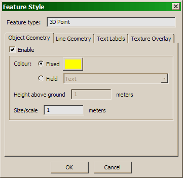

The Style Dialog defines the visual style for an
Abstract Layer. You can define the style for a layer by pressing
Style...
under Abstract Layers in the Terrain Properties.
Each of the
possible feature types can be displayed as follows.
2D/3D Points
- Object Geometry. The point can be represented
by a sphere. For 2D points, the sphere will be draped on
the terrain, at the indicated height above the ground. The
size/scale is the radius of the sphere, in
meters.
2D/3D Polylines, Polygons
- Line Geometry. 2D polylines will be draped on the
terrain. You can specify height above the ground. 3D polylines
will be drawn at their own elevation. Polygons will have their
edges drawn as lines.
The 'Tessellate edges' option means that every segment of
the polyline is split into a lot of small segments, so that it
can drape more smoothly on uneven terrain.
2D/3D Points, Polygons
- Text Labels. The label will float above the terrain
at the indicated height above ground. In the case of polygons,
the centroid is used for the label's position. For 2D
entities, the text is draped on the terrain at the indicated
height above ground.
You can specify font. If you are using a language that is not
Western European, be sure to choose a font that supports your
character set. For example, on Windows,
ArialUni.ttf instead of the default Arial.ttf will
support nearly everything.
2D Polygons
- Texture Overlay. (Experimental) The polygons
will be rasterized to a 1024x1024 texture overlay, using the
geometry color. Texture mode can be ADD (color is added),
MODULATE (color multiplies), or DECAL (color is shows directly).
Color Fields
The color of objects, lines and labels can be either fixed or
read from a field per entity. In the case of a field, it is expected to
take the form "R G B", where R, G, and B are floating-point numbers from 0 to 1.
For example, orange would be "1 0.5 0".